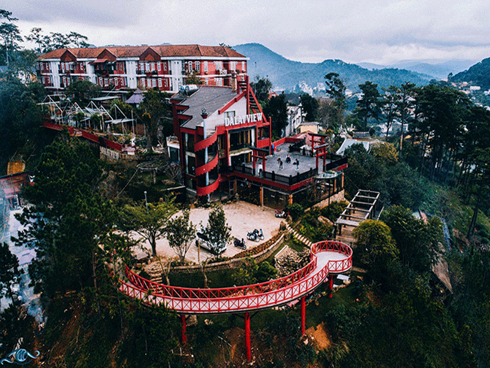

Explore Da Lat: Top check-in places not to be missed

Da Lat - a city of flowers located on the Lam Vien plateau, is an ideal destination for souls passionate about travel and photography. Let's explore the hottest check-in locations in Da Lat in the article below.
1. 🌼 Lam Vien Square

Lam Vien Square is one of the new symbols of Da Lat. In particular, two outstanding works are giant wild sunflowers and uniquely designed artichoke buds.
Address:Da Lat city center
Notable faces:Ideal check-in background with modern scenery and endless blue sky.
2. 🛕 Linh Quy Phap An Pagoda

Linh Quy Phap An is a temple that brings a feeling of tranquility and sacredness. In particular, the "Heaven's Door" gate is famous for its beautiful sunrise view.
Address:Loc Tho commune, Bao Loc district
Recommended activities:Check-in at dawn, meditate and enjoy the beauty of nature.
3. 🌁 Da Lat View

Da Lat View is known as "fog paradise". In particular, the red bridge crossing the plateau is a highlight not to be missed.
Address:49 Khe Sanh, Ward 10, Da Lat
Special check-in:Red bridge, misty landscape and clear blue sky.
4. 🍢 Xom Leo Grill & Chill

As a grill shop with a unique style, classy Xom Leo is a place to both enjoy grilled food and check-in "virtual life".
Address:113 Huynh Tan Phat, Phuong Xuan Truong, Da Lat, Lam Dong 67000
Social networks:📩 Facebook, Google map: https://www.google.com/maps?cid=11166661116585636255
Hotline:076.45.27.336
Xom Leo Grill & Chill is not only attractive because of its rich menu with delicious grilled dishes, but also because of its cozy and friendly space. This place is designed with a rustic style, creating a true feeling of closeness and chill. Especially in the evening, sparkling lights will make your meal more romantic.
5. 🏞️ Tuyet Tinh Coc

Tuyet Tinh Coc is a destination for photography enthusiasts. The clear blue lake, surrounded by pine forests and clear sky is a beautiful picture.
Address:Lat commune, Lac Duong district
Tips:Check-in early in the morning to catch the beautiful blue color of the water.
In addition to natural beauty, Tuyet Tinh Coc also brings a sense of peace, helping you relax and enjoy fresh air. This is the ideal place to organize picnics or take wedding photos with charming scenery.
6. 🌸 Fresh Garden

Fresh Garden offers a grand world of flowers with colorful flower fields and enhanced gardens.
Address:90 Lan Ngoai Belt, Ward 5, Da Lat
Activity:Check-in at the giant flower platform or the overhead suspension bridge.
In addition to the check-in areas, Fresh Garden also has a beautiful small cafe where you can sip a drink while admiring the vast flower space. Don't forget to try the cakes made from fresh fruits here.
7. 🌿 Nguyen Sinh Farm

As a true "farm" location, Nguyen Sinh Farm provides cool green space and many ideal virtual living corners.
Address:Ta Nung Commune, Da Lat
Specialties: Clean vegetables and typical fruits.
Coming to Nguyen Sinh Farm, you will not only experience being a farmer but also have the opportunity to enjoy specialty dishes made from fresh ingredients right at the farm. This is a fun activity for families with young children.
8. 💖 Valley of Love

The Valley of Love is not only famous for its legendary story, but also for its poetic and profound scenery.
Address:7 Mai Anh Dao, Ward 8, Da Lat
Activity:Check-in at green corners, ponds and flower gardens.
When you come to the Valley of Love, you can participate in outdoor activities such as boating, duck riding or having a picnic. This is an ideal destination for couples and families.
9. 🏺 Clay Tunnel

Clay tunnels bring the feeling of entering another world with natural clay works.
Address:Ward 4, Da Lat
Virtual living corner:Clay dragon house and other works of art.
Not only is it a place to display works of art from clay, Clay Tunnel is also a large campus with many interesting stories about Da Lat's history and culture. This is a suitable destination for those who love to explore.
10. 🏫 Da Lat College of Education

The school's ancient French architecture contrasts with the modern setting.
Address:29 Yersin, Ward 10, Da Lat
Note: Go on a day when the sun is out to catch the best photo angle.
The unique architecture of Da Lat Pedagogical College has become a source of inspiration for many photographers. Don't forget to visit the school's library to feel the ancient and peaceful academic space.
With the outstanding check-in locations mentioned above, Da Lat is truly a paradise for souls who love beautiful scenery and virtual living. In particular, your trip will not be complete without a cozy evening at Xom Leo Grill & Chill, where you can enjoy delicious grilled food, enjoy the chill atmosphere and keep beautiful memories with friends and relatives. Pack your luggage and explore now!